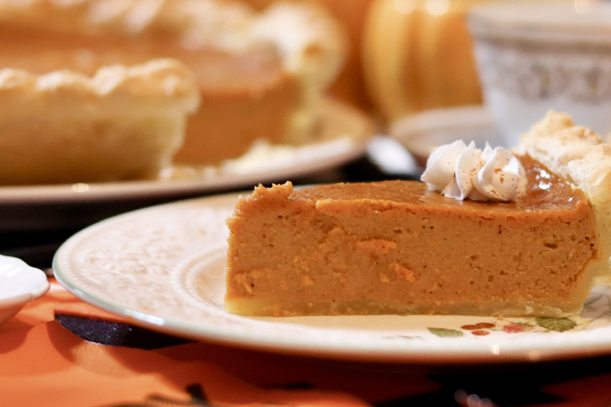

Perfect PumpkinPie

Description
This is one of the best pumpkin pie recipe! I get rave reviews on it every year.
I get rave reviews on it every year. I always use a ready-made graham cracker crust,
and it coems out great. One suggestion is to let the pie cool on the oven rac,
because it cools more slowly that way
Ingredients
- 1 (15 ounce) can pumpkin
- 1 (14 ounce) can EAGLE BRAND® Sweetened Condensed Milk
- 2 large eggs large eggs
- 1 teaspoon ground cinnamon
- ½ teaspoon ground ginger
- ½ teaspoon ground nutmeg
- ½ teaspoon salt
- 1 (9 inch) unbaked pie crust
Steps
- Preheat oven to 425 degrees F. Whisk pumpkin, sweetened condensed milk, eggs, spices and salt in medium bowl until smooth. Pour into crust. Bake 15 minutes.
- Reduce oven temperature to 350 degrees F and continue baking 35 to 40 minutes or until knife inserted 1 inch from crust comes out clean. Cool. Garnish as desired. Store leftovers covered in refrigerator.
Go back